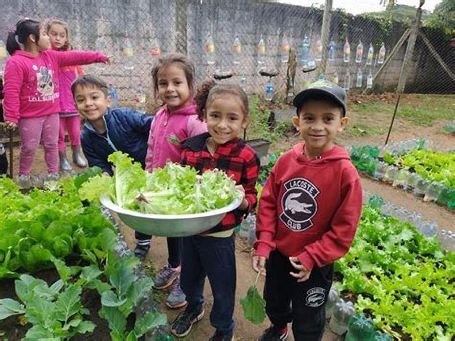

Reforço Escolar Comunitário
Foco em crianças e adolescentes, oferecendo aulas de reforço em matemática e português para melhorar o desempenho escolar.
Impacto: 90% dos alunos melhoraram suas notas no último trimestre.
Conheça as iniciativas que estamos desenvolvendo e como elas transformam a vida em nossa comunidade.
Foco em crianças e adolescentes, oferecendo aulas de reforço em matemática e português para melhorar o desempenho escolar.
Impacto: 90% dos alunos melhoraram suas notas no último trimestre.
Desenvolvimento de hortas em áreas urbanas para fornecer alimentos frescos para famílias de baixa renda e promover a educação ambiental.
Meta Atual: Arrecadar R$ 5.000,00 para comprar novas ferramentas e sementes.
Sala de Informática Kids Concluída: (Ar condicionado e Notebook Novos) com arrecadação do Bingo Comunitário, Valor: R$ 20.000,00

Meta Atual: Arrecadar R$ 15.000,00 para comprar novas notebooks.
Sua ajuda é o motor de nossa organização. Você pode contribuir com tempo, conhecimento e paixão.
Clique aqui para se inscrever: Formulário de Voluntariado.
Toda contribuição financeira é revertida integralmente para os projetos sociais.
DOAR AGORA (Apenas HTML)
(Funcionalidade será implementada nas próximas etapas com JavaScript)